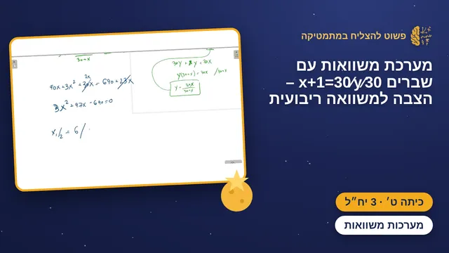

פשוט להצליח במתמטיקה › בחינות בגרות › שאלון 35371 › חורף 2023
בגרות 35371 – חורף 2023
בחינת הבגרות במתמטיקה 35371 (3 יח״ל, שאלון שני, כיתה י״א) – חורף 2023 תשפ״ג. כאן השאלון המקורי והפתרון הרשמי של משרד החינוך, וסרטוני הסבר על הנושאים שמופיעים בשאלון.
רוצים לעקוב אחרי ההתקדמות?נרשמים בחינם, וכל סרטון שראיתם מסומן ✓. ממשיכים מכל מכשיר.
הצטרפות בחינם ←סרטוני הסבר לפי הנושאים בשאלון 35371
אשכול חברה ומדע סטטיסטיקה, הסתברות, אחוזים
 ממוצע משוקלל – שאלת שכר חודשי
ממוצע משוקלל – שאלת שכר חודשי סטטיסטיקה – טבלת שכר, קבוצות והיסטוגרמה
סטטיסטיקה – טבלת שכר, קבוצות והיסטוגרמה היסטוגרמה – ממוצע, סטיית תקן ושינוי בנתונים
היסטוגרמה – ממוצע, סטיית תקן ושינוי בנתונים בעיות אחוזים מהקל אל הקשה – איך לעבוד נכון עם אחוזים 5
בעיות אחוזים מהקל אל הקשה – איך לעבוד נכון עם אחוזים 5 בעיות אחוזים מהקל אל הקשה – איך לעבוד נכון עם אחוזים 4
בעיות אחוזים מהקל אל הקשה – איך לעבוד נכון עם אחוזים 4 בעיות אחוזים מהקל אל הקשה – איך לעבוד נכון עם אחוזים 3
בעיות אחוזים מהקל אל הקשה – איך לעבוד נכון עם אחוזים 3 בעיות אחוזים מהקל אל הקשה – איך לעבוד נכון עם אחוזים 1
בעיות אחוזים מהקל אל הקשה – איך לעבוד נכון עם אחוזים 1 בעיות אחוזים מהקל אל הקשה – איך לעבוד נכון עם אחוזים 2
בעיות אחוזים מהקל אל הקשה – איך לעבוד נכון עם אחוזים 2אשכול מישור ומרחב גאומטריה אנליטית, טריגונומטריה
גאומטריה אנליטית – הסבר נוסחאות ופתרון תרגיל בגרות 3 יח מרובע במערכת צירים – שיפוע, משוואת ישר וחיתוך עם הצירים
מרובע במערכת צירים – שיפוע, משוואת ישר וחיתוך עם הצירים טריגונומטריה במעוין – גובה ואלכסון
טריגונומטריה במעוין – גובה ואלכסון גאומטריה אנליטית – נוסחאות, כלי העבודה ומשמעותם
גאומטריה אנליטית – נוסחאות, כלי העבודה ומשמעותם גאומטריה אנליטית – נוסחאות ושאלות
גאומטריה אנליטית – נוסחאות ושאלות
מרובע במערכת צירים – שיפוע, משוואת ישר וחיתוך עם הצירים
מערכת משוואות עם שברים 30∕x+1=30∕y – הצבה למשוואה ריבועיתטריגונומטריה במעוין – גובה ואלכסוןגאומטריה אנליטית – נוסחאות, כלי העבודה ומשמעותםגאומטריה אנליטית – נוסחאות ושאלותאשכול פיננסי ריבית, גדילה ודעיכה
 דעיכה – כמות דבש בכוורת, מציאת q וזמןבעיות אחוזים מהקל אל הקשה – איך לעבוד נכון עם אחוזים 5בעיות אחוזים מהקל אל הקשה – איך לעבוד נכון עם אחוזים 4בעיות אחוזים מהקל אל הקשה – איך לעבוד נכון עם אחוזים 3בעיות אחוזים מהקל אל הקשה – איך לעבוד נכון עם אחוזים 1בעיות אחוזים מהקל אל הקשה – איך לעבוד נכון עם אחוזים 2
דעיכה – כמות דבש בכוורת, מציאת q וזמןבעיות אחוזים מהקל אל הקשה – איך לעבוד נכון עם אחוזים 5בעיות אחוזים מהקל אל הקשה – איך לעבוד נכון עם אחוזים 4בעיות אחוזים מהקל אל הקשה – איך לעבוד נכון עם אחוזים 3בעיות אחוזים מהקל אל הקשה – איך לעבוד נכון עם אחוזים 1בעיות אחוזים מהקל אל הקשה – איך לעבוד נכון עם אחוזים 2